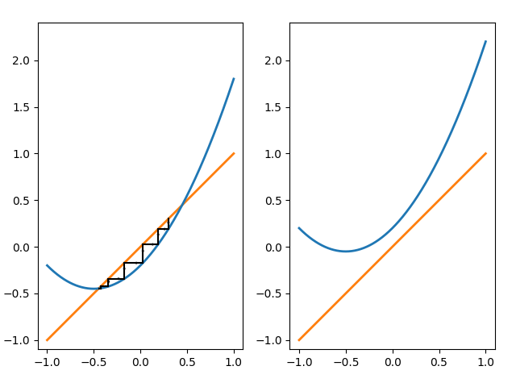
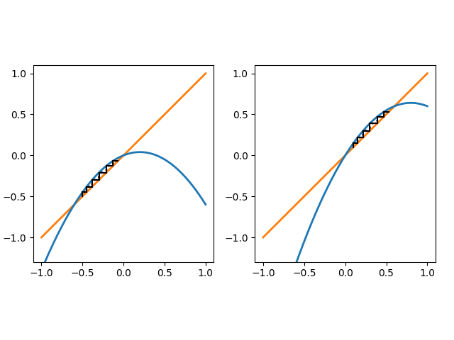
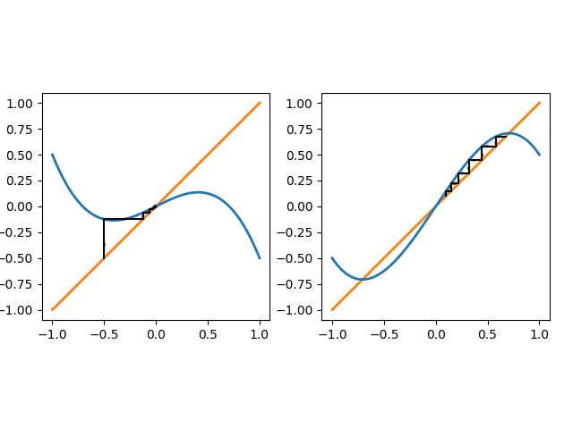
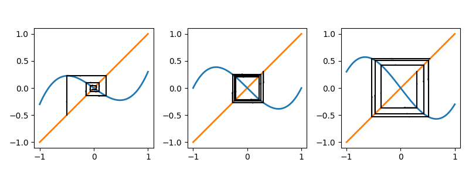
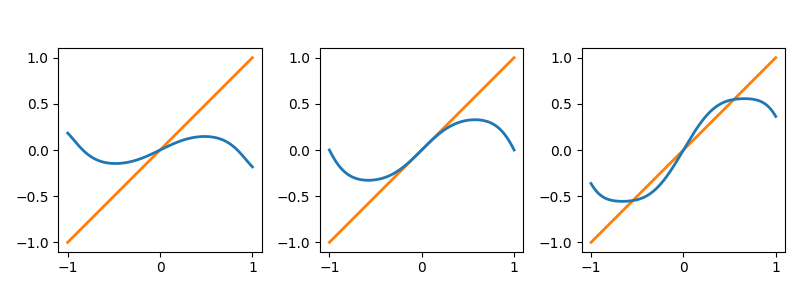
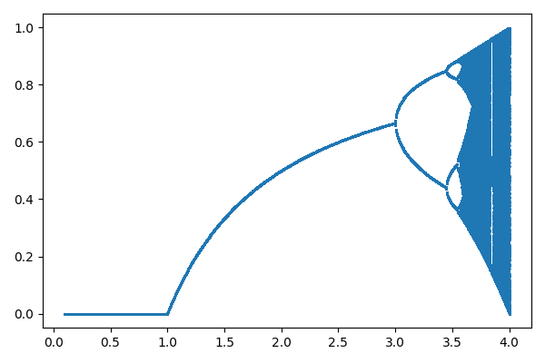
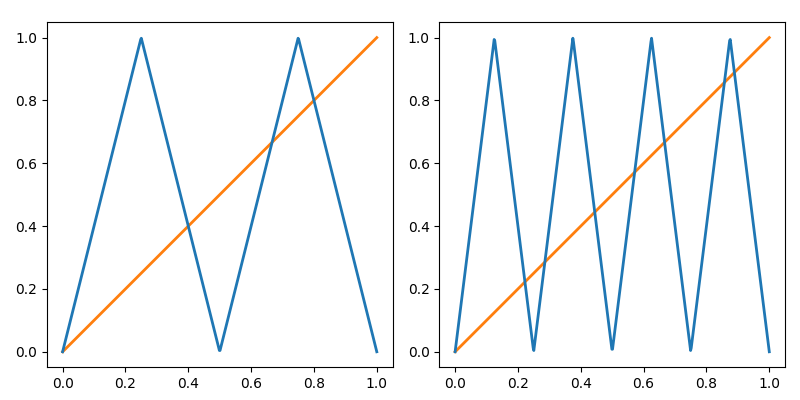

5. 分岐とカオス
力学系において, 解の挙動は平衡点やリミットサイクルの存在, およびその安定性に強く影響される. 力学系にパラメータが含まれている場合, そのパラメータを動かしたとき, 例えばある臨界値を境に平衡点が新たに現れる, 消滅するといったことが起こり得る. 一般に, 力学系では臨界点付近のパラメータの変化により, 解の挙動の劇的な違いを説明することができるが, このような現象は力学系の 分岐 (bifurcation) と呼ばれる.
また, 力学系の分岐の連鎖や蓄積は カオス を生み出すメカニズムの一つであると解釈される. ここでは典型的な分岐について紹介した後, カオス理論の入り口にあたる部分のみを簡単に紹介する.
5.1: 連続力学系の分岐
ここでは連続力学系の分岐について, 典型的なものを紹介する. まず, 力学系の分岐の様子をイメージしやすくするために, 分岐図 というアイデアを導入する.
パラメータを含む力学系の解の挙動を考える.
- パラメータに依存して平衡点やリミットサイクルがどのように変化するかを表す図を 分岐図 (bifurcation diagram) という.
- 典型的には, 横軸にパラメータ, 縦軸に平衡点やリミットサイクルを表す "値" を用いてプロットされる.
- 例えば安定な平衡点やリミットサイクルは実線で, 不安定な平衡点やリミットサイクルは点線で表す, もしくは安定性によって色を変えるなど区別して描画されることが多い.
それでは, いくつかの分岐を対象に, 具体的に分岐図のプロットを紹介していこう. 一般の力学系における分岐をきちんと調べるには, 分岐点近傍での座標変換や中心多様体縮約などが必要となる. その結果, 分岐点近傍での力学系の解の挙動は, 本質的でない項を取り除いた比較的簡単な方程式によって表現できる場合がある. このように, ある種類の分岐の本質的な性質を表す簡単な方程式を 標準形 (normal form) と呼ぶ. この資料では標準形を導出する一般的な理論には立ち入らず, 代表的な標準形や典型的な例を取り上げることにする.
サドルノード分岐 を表す標準形 \[ x' = r + x^2 \] を考える, ここで $r\in\mathbb{R}$ はパラメータである. この一次元自励系の平衡点を調べると,
- $r\lt 0$ のときは $x_* = -\sqrt{-r}$ が安定な平衡点であり, $x_* = \sqrt{-r}$ が不安定な平衡点である,
- $r=0$ のときは $x_*=0$ が半安定な平衡点である,
- $r\gt 0$ のときは平衡点は存在しない
となっていることがわかる. このことを分岐図に表すと, 例えば以下のようになる:

横軸はパラメータ $r$ とし, 縦軸は一次元力学系の場合は平衡点の座標とすれば良い. ここでは実線はパラメータ $r$ を変化させた際の安定な平衡点の座標の変化を, 点線は不安定な平衡点を表している. このように, パラメータを変化させることで $r=0$ を境に平衡点の安定性や存在が変化し, 解の挙動が大きく異なることがわかる.
このように, 源点と沈点があるパラメータで衝突し平衡点が消滅する (もしくは平衡点が存在しない状態からパラメータを変化させると平衡点が出現し, 源点と沈点に分離する) というタイプの分岐を サドルノード分岐 (saddle node bifurcation) という.
トランスクリティカル分岐 を表す標準形 \[ x' = rx - x^2 \] を考える, ここで $r\in\mathbb{R}$ はパラメータである. この力学系の平衡点は,
- $r\lt 0$ のときは $x_* = 0$ が安定な平衡点であり, $x_* = r$ が不安定な平衡点である,
- $r=0$ のときは $x_* = 0$ が半安定な平衡点である,
- $r\gt 0$ のときは, $x_* = r$ が安定な平衡点であり, $x_* = 0$ が不安定な平衡点である.
このように, パラメータを変化させた際に平衡点の安定性が交換される分岐を トランスクリティカル分岐 (transcritical bifurcation) という.
超臨界ピッチフォーク分岐 を表す標準形 \[ x' = rx - x^3 \] を考える, ここで $r\in\mathbb{R}$ はパラメータである. この力学系の平衡点は,
- $r\lt 0$ のときは $x_* = 0$ が安定な平衡点である,
- $r=0$ のときは $x_* = 0$ が安定な平衡点である (が, 線形項が消失することから収束の速さは指数的減衰から代数的減衰に変化する),
- $r\gt 0$ のときは, $x_* = \pm\sqrt{r}$ が安定な平衡点であり, $x_* = 0$ が不安定な平衡点である,
このように, パラメータを変化させた際に $1$ つ平衡点が$3$ つの平衡点に分裂するような分岐を (分岐図の形状から) ピッチフォーク分岐 (pitchfork bifurcation) もしくは 熊手型分岐 という. この例では安定な平衡点が不安定化し, 代わりに $2$ つの安定な平衡点が現れるが, このようなピッチフォーク分岐を特に 超臨界ピッチフォーク分岐 (supercritical pitchfork bifurcation) という. なお, この例のように, あるパラメータに対して安定な平衡状態が $2$ つ存在する状況を 双安定 (bistable) であるという.

逆に, 亜臨界ピッチフォーク分岐 を表す標準形 \[ x' = rx + x^3 \] を考えると, パラメータを変化させた際に二つの不安定な平衡点と安定な平衡点 $x=0$ が合流し, $x=0$ が不安定に転じる. これもピッチフォーク分岐に分類されるが, 特に 亜臨界ピッチフォーク分岐 (subcritical pitchfork bifurcation) と呼ばれる.
標準形ではないが, \[ x' = rx + x^3 - x^5 \] という一次元力学系を考えてみよう. 分岐図を描くと, $r=-1/4$ において二つのサドルノード分岐が, $r=0$ において亜臨界ピッチフォーク分岐が起こることがわかる.

この問題に対し, パラメータを時間に依存して十分にゆっくり変化させると, 解は "パラメータをどのように変化させたか" に依存することになる.
例えば初期値を $x=0$ の近くに与え, $r$ をゆっくりと増加させる. パラメータ $r$ が負である間は, 解は $x=0$ に近づこうとするが, $r=0$ を境に $x=0$ は安定な平衡解では無くなってしまい, 解は異なる平衡解近づこうとする. 今度は逆に $r$ をゆっくりと減少させると, $r=-1/4$ を境に安定な平衡解は $x=0$ しか存在しなくなり, 系の状態のジャンプが発生する.
このように, 系の状態変化はパラメータ変化や状態の "履歴" に依存することがある. このような性質は ヒステリシス (hysteresis) と呼ばれ, 様々な現象において観察されるものであるが, 双安定性やピッチフォーク分岐などはこのような現象を数理モデルで再現する際に有用な特徴を持つ.
ここでは $2$ 次元力学系 \[ \left\{\begin{array}{rl} x' &= \mu x - \omega y - (x^2+y^2)x, \cr y' &= \omega x + \mu y - (x^2+y^2)y \end{array}\right. \] を考えよう, ただし $\mu$, $\omega$ はパラメータであり, $\omega\gt0$ とする. まず, 原点 $\mathbf{0}$ が平衡点であることは明らかであり, 右辺を $\mathbf{f}(\mathbf{x})$ と表すことにすると, ヤコビ行列 \[ D\mathbf{f}(\mathbf{0}) = \begin{pmatrix} \mu & -\omega \cr \omega & \mu \end{pmatrix} \] の固有値は $\lambda = \mu\pm i\omega$ なので, 線形安定性解析より $\mu\lt0$ ならば $\mathbf{0}$ は漸近安定な平衡点であり, $\mu\gt0$ ならば $\mathbf{0}$ は不安定な平衡点である.
さて, この問題を極座標表示を用いて書き直してみよう: $r\gt0$ を用いて $x=r\cos\theta$, $y=r\sin\theta$ と表すことで \[ \left\{\begin{array}{rl} r'\cos\theta - r\theta'\sin\theta &= \mu r\cos\theta - \omega r\sin\theta - r^3\cos\theta, \cr r'\sin\theta + r\theta'\cos\theta &= \omega r\cos\theta + \mu r \sin\theta - r^3\sin\theta \end{array}\right. \] すなわち \[ \begin{pmatrix} \cos\theta & -\sin\theta \cr \sin\theta & \cos\theta \end{pmatrix}\begin{pmatrix} r' - (\mu r-r^3) \cr r(\theta' - \omega) \end{pmatrix} = \mathbf{0} \] が得られるため, これを解いて \[ \left\{\begin{array}{rl} r' &= \mu r - r^3 \cr \theta' &= \omega \end{array}\right. \] が得られる. ここから ($r\ge0$ に注意すると), $\mu\gt 0$ の場合は $r=\sqrt{\mu}$ で表される安定なリミットサイクルが存在することがわかる.
これを分岐図に表してみよう. パラメータ $\omega\gt0$ は固定することにして, パラメータ $\mu$ を分岐図の横軸にする. 縦軸には安定な平衡点, リミットサイクルに対する $r$ の値を用いることにしてみよう. このとき以下の図のように, 安定な平衡点が不安定化し, 代わりに安定な周期解が現れる様子を表すことができる.

このような分岐は ホップ分岐 (Hopf bifurcation) と呼ばれるものであり, 典型的には線形化方程式の複素共役な $2$ つの固有値が, パラメータを変化させた際に (適切な形で) 虚軸を横切ることで発生するものである. 上の例は 超臨界ホップ分岐 (supercritical Hopf bifurcation) であり, 安定平衡点と不安定な周期軌道が衝突して平衡点が不安定に転じる 亜臨界ホップ分岐 (subcritical Hopf bifurcation) も知られている.
ここでは具体例として \[ \left\{\begin{array}{rl} x' &= 2rx - x^3 - xy, \cr y' &= -y + x^2 \end{array}\right. \] という 二次元力学系を考えてみる. まず, $r\le 0$ ならば平衡点は $\mathbf{0}$ の $1$ 点のみである. 一方, $r\gt 0$ ならば \[ \mathbf{0},\quad \mathbf{x}_{*1} = \left(\sqrt{r}, r\right),\quad \mathbf{x}_{*2} = \left(-\sqrt{r}, r\right) \] の $3$ 点が平衡点となる. つまり $r=0$ において, $\mathbf{0}$ という平衡点が $3$ つに分離していることになる.
次に, 線形安定性解析を試みよう. 右辺のベクトル場 \[ \mathbf{f}(\mathbf{x}) = \begin{pmatrix} 2rx - x^3 - xy \cr -y + x^2 \end{pmatrix} \] のヤコビ行列が \[ D\mathbf{f}(\mathbf{x}) = \begin{pmatrix} 2r - 3x^2 - y & -x \cr 2x & -1 \end{pmatrix} \] となることから, $D\mathbf{f}(\mathbf{0})$ の固有値は $-1$, $2r$ であり, 従って平衡点 $\mathbf{0}$ は $r\lt0$ のとき安定, $r\gt0$ のとき鞍点であり不安定となる (特に $r$ を変化させた際に, 実軸上の固有値が虚軸を横切るように変化することを確認できる). 一方で, $r\gt 0$ の際に $\mathbf{x}_{*1}$, $\mathbf{x}_{*2}$ におけるヤコビ行列を調べることで, これらが安定な平衡点であることが確認できる. 実用上は, これらの情報からこの分岐は二次元力学系における超臨界ピッチフォーク分岐だと判断できる.
パラメータ $r$ を含む一次元力学系 \[ x' = rx - x^3 + \varepsilon \] について, 分岐が起きる $r$ と分岐の種類を求めよ, ただし $\varepsilon\gt 0$ は定数とする.
まず, 平衡点は $y=rx-x^3$ と $y=-\varepsilon$ の交点であることに注意. いま, $y=rx-x^3$ は $r\gt0$ ならば $x=-\sqrt{r/3}$ において極小値 $-2r/3\sqrt{r/3}$ を持つため, これが $-\varepsilon$ より大きければ平衡点は $1$ つ, 小さければ平衡点は $3$ つ存在する. つまり \[ r_0 = \left(\dfrac{27}{4}\varepsilon^2\right)^{\frac{1}{3}} \] とおくと, $r=r_0$ において分岐が起きている.
次に, この分岐の種類について考える. 自励系の右辺 $f(x) = rx-x^3+\varepsilon$ の符号を (必要ならプロットして) 考えると, $x\ge 0$ には常に安定な平衡点が $1$ つ存在し, $r\gt r_0$ ならば $x\lt 0$ の部分に (既に存在する平衡点とは異なる部分に) 安定な平衡点と不安定な平衡点が一つずつ出現する. 従って, この分岐はサドルノード分岐である ($1$ つの平衡点が $3$ つに分裂しているわけではないため, ピッチフォーク分岐では無い).
簡単な問題に対しては, 手計算により分岐図を得ることができるが, 一般にはそうしたことが可能とは限らない. そのような場合に, 数値計算により分岐図を導出し, それをパラメータに依存する力学系の解の挙動の理解に役立てることがあるが, このアイデアは 数値分岐解析 と呼ばれる. 残念ながら, 一般的な状況まで含む数値分岐解析の手法は複雑であり, ここで全てを説明することは困難である. ここでは, 簡単な問題に限って分岐図を導出する数値計算を通じて, 分岐解析に用いられる数値計算のアイデアを紹介する.
まず, 簡単のために $1$ 次元力学系のみを対象とし, 分岐はサドルノード分岐, トランスクリティカル分岐, ピッチフォーク分岐のみを想定することにする. また, $f$ に対する適当な仮定の下で陰関数定理を適用することで, パラメータを動かした際の平衡点に軌跡 \[ \{(x, r) \in \mathbb{R}^2: f(x, r) = 0\} \] は, 分岐図の上で複数の曲線として表されるとする. この各曲線は $f(x,r) = 0$ の解曲線と呼ばれ, また分岐図における 枝 (branch) と呼ばれることがある.
さて, 一般にパラメータ $r$ を含む \[ f(x, r) = 0 \] の解曲線を追跡する数値計算手法として numerical continuation method が知られている (日本語訳はよくわからない). ここではその一つである 疑似弧長法 (pseudo-arclength continuation) を紹介しよう. 解曲線がパラメータ $s$ を用いて \[ \mathbf{y}(s) = (x(s), r(s)) \] と表されるとする, このとき $f(\mathbf{y}(s)) = 0$ であることに注意. いま, $\mathbf{y}(s_k)$ が与えられたとき, $\mathbf{y}(s_{k+1})$ は \[ \mathbf{y}(s_{k+1}) - \mathbf{y}(s_k) = \int_{s_k}^{s_{k+1}}\mathbf{y}'(s)~ds \] となることに基づき, $\mathbf{y}(s_{k+1})$ の予測値 $\widetilde{\mathbf{y}}_{k+1}$ を \[ \widetilde{\mathbf{y}}_{k+1} = \mathbf{y}(s_k) + \Delta s \mathbf{y}'(s_k) \approx \mathbf{y}(s_k) + \int_{s_k}^{s_{k+1}}\mathbf{y}'(s)~ds = \mathbf{y}(s_{k+1}) \] と定める, ここで $\Delta s = s_{k+1} - s_k$ であり, これは前進オイラー法による近似を意味している. なお, \[ f(\mathbf{y}(s)) = f(x(s), r(s)) = 0 \] の両辺を $s$ で微分することで \[ f_x(\mathbf{y}(s))\dfrac{dx}{ds}(s) + f_r(\mathbf{y}(s))\dfrac{dr}{ds}(s) = 0 \] となることから, 適当な $\alpha\in\mathbb{R}$ を用いて \[ \mathbf{y}'(s_k) = \left(\dfrac{dx}{ds}(s_k), \dfrac{dr}{ds}(s_k)\right) = \alpha(f_r(\mathbf{y}(s_k)), -f_x(\mathbf{y}(s_k))) \] という関係が成り立っていることがわかる. これを用いれば, (適当な $\alpha$ を用いて) $\widetilde{\mathbf{y}}_{k+1} = \mathbf{y}(s_k) + \Delta s \mathbf{y}'(s_k)$ を具体的に計算することが可能である. このようにして構成された近似値 $\widetilde{\mathbf{y}}_{k+1}$ は $f(\widetilde{\mathbf{y}}_{k+1}) = 0$ を満たすとは限らないが, これを基に適当に修正を加えれば, 解曲線上の点 $\mathbf{y}(s_{k+1})$ を得ることができるだろう.

このアイデアに基づき, 疑似弧長法では 解曲線上の与えられた点 $\mathbf{y}_k$ と十分小さなステップ幅 $\Delta s$ に対して, 以下を計算することで解曲線上の点 $\mathbf{y}_{k+1}$ を求める:
- まず, \[ \mathbf{v} = \dfrac{(f_r(\mathbf{y}_k), -f_x(\mathbf{y}_k))}{\sqrt{f_x(\mathbf{y}_k)^2 + f_r(\mathbf{y}_k)^2}} \] を計算する.
- 次に, $\mathbf{y}_{k+1}$ の予測値を \[ \widetilde{\mathbf{y}}_{k+1} = \mathbf{y}_k + \Delta s \mathbf{v} \] と定める.
- 最後に点 $\widetilde{\mathbf{y}}_{k+1}$ において $\mathbf{v}$ と直交する直線 (超平面) と解曲線の交点を, 以下をニュートン法で計算することで求め, その結果を $\mathbf{y}_{k+1}$ とする: \[ \mathbf{F}(\mathbf{y}) = \begin{pmatrix} f(\mathbf{y}) \cr (\mathbf{y}-\widetilde{\mathbf{y}}_{k+1})\cdot\mathbf{v} \end{pmatrix} = \mathbf{0}. \]
これを繰り返すことで得られる $\mathbf{y}_0$, $\mathbf{y}_1$, $\dots$ が, 解曲線の近似を与える.
なお, 陽的な計算で求めた予測値を陰的な計算で修正する計算手法を 予測子修正子法 (Predictor-Corrector method) と呼ぶが, 疑似弧長法もその一種であると解釈することができる. また, 疑似弧長法は $2$ 次元以上の力学系にも拡張可能であるが, ここでは言及しない.
各 $\mathbf{y}_k$ における安定性を調べる際には, $f_x(\mathbf{y}_k)$ の符号 ($2$ 次元以上の力学系では, $\mathbf{y}_k$ におけるヤコビ行列の固有値実部の符号) を調べれば良い. 実際の分岐の種類を判定するには様々なテクニックが用いられるが, ここでは深入りしない.
ここまでの説明を実際の数値計算で確かめてみよう. 具体例として, 以前にピッチフォーク分岐が起こる具体例として紹介した \[ x' = rx + x^3 - x^5 \] を用いることにする. サンプルコード にあるスクリプトでは, 初期値 $\mathbf{y}_0 = (x_0, r_0) = (x_0, -x_0^2 + x_0^4)$ を, $x_0 = 0.1$ とすることで決定している. この初期値を用いて疑似弧長法で解曲線をプロットしたものが, 分岐図における枝の一つになっていることを確認できる:

ただし, 実際には分岐点の高精度な検出, 二次元以上の力学系やホップ分岐を含む様々な分岐の追跡は容易ではない. 現在では数値分岐解析用の様々なソフトウェア, ライブラリなど (例えば AUTO, http://cmvl.cs.concordia.ca/auto/) が存在するため, 興味があれば調べてみると良いだろう.
5.2: 離散力学系の分岐
次に, 離散力学系の分岐についても同様に紹介し, 特に 周期倍分岐 が導出する複雑な解の挙動について確認しよう. 連続力学系の分岐では, 線形化方程式に現れるヤコビ行列の固有値が虚軸を横切ることで安定性が変化するが, 離散力学系では線形化問題の固有値が単位円を横切る (固有値の絶対値が $1$ を通過する) ことで平衡点の安定性が変化する可能性がある. 従って, そのような点が分岐点の候補となる.
まず, パラメータ $r$ を含む離散力学系 \[ x_{n+1} = F_r(x_n) \] を考える. 一次元離散力学系では, パラメータ $r$ を変化させた際に, 平衡点 $x_*$ に対して \[ |F_r'(x_*)| \] が $1$ 未満なら平衡点 $x_*$ は漸近安定であり, $1$ より大きければ $x_*$ は不安定である.
離散力学系におけるサドル・ノード分岐の標準形 \[ x_{n+1} = x_n + r + x_n^2 \] を考える. 右辺を $F_r(x_n)$ とおくと, 平衡点は \[ x_* = F_r(x_*) \] を満たす $x_*$ であり, つまり $r + x_*^2 = 0$ となる $x_*$ である. 従って, この力学系は $r=0$ において分岐が発生し, $r\lt 0$ なら平衡点は $x_* = \pm\sqrt{-r}$ の二つ存在するが, $r\gt0$ なら平衡点は存在しない. 平衡点の安定性については, \[ |F_r'(x)| = |1+2x| \] を用いて, $r$ が $0$ に近いときに調べると.
- $-1\lt r\lt 0$ のときは $x_* = -\sqrt{-r}$ は安定な平衡点である. 同様に $x_* = \sqrt{-r}$ は不安定な平衡点である,
- $r\gt 0$ のときは平衡点は存在しない.
この分岐の様子は, グラフ反復法と同様に $x_{n+1} = F(x_n)$ と $x_{n+1} = x_n$ とを重ねてプロットするとわかりやすいだろう. 左が $r = -0.2$, 右が $r=0.2$ の場合である.

なお, 分岐図は連続系のサドル・ノード分岐と同様になる.
離散力学系におけるトランスクリティカル分岐の標準形 \[ x_{n+1} = x_n + rx_n - x_n^2 \] を考える. 右辺を見ると, 平衡点は $rx_* - x_*^2 = 0$ を満たす $x_*$ である. また, 右辺を $F_r(x_n)$ とおくと, \[ |F_r'(x)| = |1+r - 2x| \] であることに注意し, やはり $r=0$ の付近で平衡点を調べると,
- $-1\lt r\lt 0$ のときは $x_* = 0$ が安定な平衡点であり, $x_* = r$ が不安定な平衡点である,
- $r\gt 0$ のときは $x_* = r$ が安定な平衡点であり, $x_* = 0$ が不安定な平衡点である.

離散力学系におけるピッチフォーク分岐の標準形 \[ x_{n+1} = x_n + rx_n - x_n^3 \] を考える. 右辺を $F_r(x_n)$ とおくと, \[ |F_r'(x)| = |1+r - 3x^2| \] である. やはり $r=0$ の付近で平衡点を調べると,
- $-1\lt r\lt 0$ のときは $x_* = 0$ が安定な平衡点である,
- $r\gt 0$ のときは $x_* = \pm\sqrt{r}$ が安定な平衡点であり, $x_* = 0$ が不安定な平衡点である.

ここから, 離散力学系において新しく現れる分岐を考えていこう.
ここでは 周期倍分岐 の標準形 \[ x_{n+1} = -(1+r)x_n + x_n^3 \] を考える. 右辺を $F_r(x_n)$ とおくと \[ |F_r'(x)| = |-(1+r) + 3x^2| \] である. やはり $r=0$ の付近で平衡点を調べると,
- $r\lt 0$ のときは $x_* = 0$ は安定な平衡点である,
- $r\gt 0$ のときは $x_* = 0$ は不安定な平衡点である.
ここではさらに, $r\gt0$ のとき \[ F_r(\sqrt{r}) = -\sqrt{r},\quad F_r(-\sqrt{r}) = \sqrt{r}, \] つまり $x = \pm\sqrt{r}$ が $2$-周期解となることに注目しよう. さらに, \[ (F_r^2)'(\sqrt{r}) = F_r'(F_r(\sqrt{r}))F_r'(\sqrt{r}) = (-1+2r)^2 \] であることに注意すると, $0\lt r\lt 1$ ならば $2$-周期軌道は安定であることもわかる. つまり, パラメータ $r$ を変化させることで安定な平衡点が不安定化し, 代わりに安定な $2$-周期軌道が現れたことになる. このような分岐を 周期倍分岐 (period-doubling bifurcation) という.
グラフ反復法の様子を以下に掲載する (左: $r=-0.3$, 中央: $r=0$, 右: $r=0.3$)

また, $2$-周期解の存在を確認するために, $F_r^2(x)$ のグラフの様子のプロットも以下に合わせて掲載しておく:

この資料では詳細は説明しないが, $F_r'(x_*) = -1$ となるパラメータ $r$ を境に周期倍分岐が起きる場合がある. また, $2$-周期解がさらに周期倍分岐を起こして $4$-周期解が現れる. 同様に, パラメータの変化による大量の周期倍分岐により, 安定周期軌道の周期が $1, 2, 4, 8, \dots$ と倍化していくが, この周期倍分岐の無限の系列を 周期倍分岐カスケード (period-doubling cascade) と呼ぶことがある. 周期倍分岐カスケードの極限付近では, 有限周期軌道だけでは表現できない複雑な挙動が現れる.
周期倍分岐により複雑な解の挙動が現れる例として, ここではロジスティック写像 \[ x_{n+1} = F_a(x_n) = ax_n(1-x_n) \] を考えよう, ただし $0\lt a\le 4$ とし, $F_a$ の定義域として正不変集合 $[0, 1]$ のみを考える.
この問題を例に, 周期倍分岐の様子を分岐図に示してみよう. ここでは以下のように分岐の様子を表現する:
- 初期値 $x_0$ を適当に選ぶ,
- $F_r$ を十分な回数だけ反復し, 大量の $x_n$ を得る,
- 過渡状態を除くことで, 点列 $\{x_n\}$ の終盤に現れる点たちだけを縦軸に, $r$ を横軸にプロットする.
上の例に対して, この手順で作成した分岐図を以下に掲載する.

ロジスティック写像では,
- $0\lt a\lt 1$ のときは $x_* = 0$ が漸近安定な平衡点である,
- $1\lt a\lt 3$ のときは $x_* = 1-a^{-1}$ が漸近安定な平衡点である,
- $a = 3$ で周期倍分岐が起こり, 安定な $2$-周期軌道が現れる,
- $a = 1+\sqrt{6}$ でさらに周期倍分岐が起こり, 安定な $4$-周期軌道が現れる,
- さらに $a$ を大きくすることで, 周期倍分岐が無限に起こり続け, 最終的に有限周期軌道だけでは表現できない複雑な挙動が現れる
という振る舞いをすることが知られているが, 上の分岐図は確かにその様子を表現している.
上の例では周期倍分岐により周期が巨大な安定周期軌道が現れ, 最終的に解の挙動が複雑になる過程について観察できる. 一方で, 複雑な解の挙動を生み出す仕組みは周期倍分岐だけではない. 複雑な解の挙動を示す離散力学系の簡単な例として, 次は テント写像 \[ f(x) = \left\{\begin{array}{rl} 2x &\text{if }x\lt 1/2, \cr 2(1-x) &\text{if }x\gt 1/2 \end{array}\right. \] により表される離散力学系 $x_{n+1} = f(x_n)$ を考える, ただし $f$ の定義域は正不変集合 $[0, 1]$ のみを考える. 平衡点が不安定であることは明らかであり, 実際に適当な初期値に対する解の挙動をグラフ反復法により図示すると, 複雑な挙動を観察することができる:

さらに, $f^2$ や $f^3$ のプロットを考えると, この離散力学系は不安定な $2$-周期軌道や $3$-周期軌道を持つことがわかる. 同様に, 任意の自然数 $n$ に対して $f^n$ のプロットの概形も容易に想像でき, $y=x$ と $y=f^n(x)$ の交点が得られる. それら交点のうち, $n-1$ 以下の周期軌道を表す交点を除いた点が $n$-周期軌道を表すため, 確かに不安定な $n$-周期軌道が存在することもわかる:

このような特徴は, テント写像が 引き伸ばし (stretching) と 折りたたみ (folding) により構成されていることに起因していると説明される. 具体的には, テント写像では区間 $[0, 1/2]$ と $[1/2, 1]$ のそれぞれが, 写像 $f$ によって区間 $[0, 1]$ 全体へ写される. 各区間では傾きの絶対値が $2$ であるため, 近い $2$ 点の距離は局所的に $2$ 倍に引き伸ばされる. 一方, 右半分では$x=1/2$ で折り曲げたような形となり, 向きを反転させて $[0,1]$ に戻す. この "引き伸ばし" と "折りたたみ" の反復が複雑な軌道を生み出す。
同様のアイデアに基づく写像として, 馬蹄形写像 も複雑な解の挙動が観察される二次元離散力学系の典型例として重要なものであり, その反復により得られる複雑な挙動が カオス と関連付けられることになる:
平面 $\mathbb{R}^2$ 上の正方形 $S$ に対して, $S$ を縦に引き伸ばし, 横には縮めた長方形を中央で折り曲げて馬蹄形に変形し, $S$ と重なるように配置した領域を $h(S)$ とする. このように構成される $h$ を 馬蹄形写像 (horseshoe map) という.

5.3: カオス
ここからは力学系における カオス の具体例を見てみよう. カオスとは, 大雑把に言えば, 次の状態が完全に一意に決まるにもかかわらず, 複雑かつ不規則な挙動が発生することを指す. 厳密には, カオスには複数の数学的定式化があるが, 本資料では 初期値鋭敏性 を持つ有界な複雑な長時間挙動を主に考えることにする.
初期値鋭敏性は, 初期値の微小な差 $\delta_0$ による時刻 $t$ における解の差 $\delta(t)$ が指数関数的に増大するという性質であり, 直感的には初期値に微小な差がある二つの軌道が十分近い間は, ある $\lambda_{\max}\gt0$ を用いて \[ \|\delta(t)\| \approx e^{\lambda_{\max} t}\|\delta_0\| \] となることと説明される (この $\lambda_{\max}$ は 最大リアプノフ指数 と呼ばれることがある). 実際には, 解の差 $\delta(t)$ の大きさには, 有界なカオス軌道では上限が存在するが, 解の挙動に大きな違いが生じることは確かである.
カオス的な挙動の具体例として, まずは (有名な) ローレンツ方程式 を考えよう: \[ \left\{\begin{array}{rl} x' &= \sigma(y-x), \cr y' &= x(\rho-z)-y, \cr z' &= xy-\beta z. \end{array}\right. \] ローレンツ方程式は気象現象に対する単純化された数理モデルとして提案されたものであるが, 比較的単純な連立常微分方程式が予測不能な解の挙動を導出する典型例として扱われる. まず, $3$ つのパラメータ $\sigma$, $\rho$, $\beta$ をそれぞれ $\sigma = 10$, $\rho=28$, $\beta=8/3$ として数値計算をしてみよう. 左は初期値 $(1, 1, 1)$ に対する計算結果, 右は初期値 $(1+10^{-6}, 1, 1)$ に対する計算結果であり, 初期値鋭敏性を確認できる.

ただしこのプロットはあくまで数値計算結果であることに注意する必要がある. 実際には初期値鋭敏性のため, カオス的挙動の数値解は誤差の影響を強く受け, 厳密解から離れてしまうが, ここでは個々の軌道については気にせず, アトラクターの形状などに注目することにする.
さて, ここではパラメータ $\rho$ に注目し, どのように分岐が起こるのかを見てみよう. 以降, 常に $\sigma=10$, $\rho\gt0$, $\beta=8/3$ とする.
- まずは $0\lt \rho \le 1$ のときは平衡点は $\mathbf{0}$ のみであり, $\rho\gt 1$ ならば \[ \mathbf{0},\quad \mathbf{x}_{*1} = (\sqrt{\beta(\rho-1)}, \sqrt{\beta(\rho-1)}, \rho-1),\quad \mathbf{x}_{*2} = (-\sqrt{\beta(\rho-1)}, -\sqrt{\beta(\rho-1)}, \rho-1) \] の $3$ つが平衡点であることは簡単に確認できる. この分岐はピッチフォーク分岐である.
- 次に線形安定性解析を試みよう: ローレンツ方程式の右辺 \[ \mathbf{f}(\mathbf{x}) = \begin{pmatrix} \sigma(y-x) \cr x(\rho-z)-y \cr xy-\beta z \end{pmatrix} \] のヤコビ行列は \[ D\mathbf{f}(\mathbf{x}) = \begin{pmatrix} -\sigma & \sigma & 0 \cr \rho-z & -1 & -x \cr y & x & -\beta \end{pmatrix} \] である.
- これを用いると, $D\mathbf{f}(\mathbf{0})$ の固有値は \[ \lambda = -\beta,\quad \dfrac{1}{2}\left(-(\sigma+1)\pm \sqrt{(\sigma+1)^2 - 4\sigma(1-\rho)}\right) \] である. 従って, $0\lt \rho\lt 1$ ならば $\mathbf{0}$ は漸近安定な平衡点であり, $\rho\gt 1$ ならば $\mathbf{0}$ は鞍点となる.
- さて, $D\mathbf{f}(\mathbf{x}_{*1})$ および $D\mathbf{f}(\mathbf{x}_{*2})$ の固有値は
\[
\lambda^3 + (1+\sigma+\beta)\lambda^2 + \beta(\sigma+\rho)\lambda + 2\sigma\beta(\rho-1) = 0
\] の根であり, ある $\rho^*\gt 1$ が存在して
\[
1\lt \rho \lt\rho^*
\] に対して全ての固有値は負の実部を持ち, 従って $\mathbf{x}_{*1}$, $\mathbf{x}_{*2}$ が漸近安定な平衡点であることがわかる.
- なお, このような $\rho^*$ の上限を求めるには, ちょうど $\rho=\rho^*$ のときに実部が $0$ の固有値が現れることから \[ \lambda^3 + (1+\sigma+\beta)\lambda^2 + \beta(\sigma+\rho^*)\lambda + 2\sigma\beta(\rho^*-1) = (\lambda+\alpha)(\lambda+i\omega)(\lambda-i\omega) \] という形になっていることに注目して式変形すれば良い ($\sigma=10 \gt 1+8/3 = 1+\beta$ に注意): \[ \rho^* = \sigma\dfrac{\sigma + \beta + 3}{\sigma-\beta-1} = \dfrac{470}{19} \approx 24.737. \]
- 実は上で求めた $\rho^*$ に対して, $\rho=\rho^*$ で亜臨界ホップ分岐が起こることで $\mathbf{x}_{*1}$, $\mathbf{x}_{*2}$ が不安定な平衡点に転じることが知られている.
- さらに言えば, 実はある $\rho^{**}\approx 13.926\in (1, \rho^*)$ において, 鞍点 $\mathbf{0}$ でのホモクリニック軌道が存在し, これによる分岐が発生することも知られている. 詳細な分岐過程は複雑であるため, ここでは深入りしない.
- 例えば $\rho=28$ のときの計算結果をみると, 解の軌道は蝶の羽のような形をした不変集合に引き寄せられ, その付近を動いている様子が観察されるが, これはアトラクターが存在していることを意味している. カオス的な挙動を生み出すアトラクターは ストレンジアトラクター もしくは カオスアトラクター と呼ばれる. 特にローレンツ方程式において観察されるストレンジアトラクターは ローレンツアトラクター と呼ばれ, 多くの研究がなされている.

さて, この計算結果は $3$ 次元のプロットとして表しているが, ポアンカレ写像のアイデアを用いることで離散力学系として解釈し, さらにそれを $1$ 次元に射影した近似的な離散力学系として扱うことも可能である. 例えば, 解の $z$ 座標の極大値を取り出した点列 $\{z_n\}$ を $1$ 次元離散力学系 \[ z_{n+1} = f(z_n) \] とみなしてみる. 下図右に横軸を $z_n$, 縦軸を $z_{n+1}$ として作成したプロットを掲載する. これもローレンツ方程式に対応する $1$ 次元離散力学系を与える写像 $f$ のプロットの概形と解釈できるものであり, これは ローレンツ写像 と呼ばれるものと関連している. なお, グラフ中のオレンジの線は $z_n = z_{n+1}$ を表している.

ローレンツ写像も, 以前に紹介したテント写像における "引き伸ばし" と "折りたたみ" と同様の作用があり, これがローレンツ方程式のカオス的な解の挙動と対応していると説明することができる. 簡単な常微分方程式でも複雑で非周期的な解の挙動が現れることがある. そして, 解の複雑な挙動はアトラクターや離散力学系を表す写像など, 幾何学的なアイデアにより説明することができる.
次に, カオス的な挙動が生じる幾何学的な仕組みの具体例として, 以前に紹介した ダフィング方程式 を考えてみよう. まず, 周期外力を持たないダフィング方程式 \[ x''-x+x^3=0 \] から導出される \[ \left\{\begin{array}{rl} x' &= y, \cr y' &= x-x^3 \end{array}\right. \] は \[ H(x,y) = \dfrac{y^2}{2} - \dfrac{x^2}{2} + \dfrac{x^4}{4} \] を保存量として持つハミルトン系であり, 平衡点 $\mathbf{0}$ は鞍点であることは以前に確認した通りである. また, $H(x,y)=0$ という等高線上にはホモクリニック軌道が存在するのだった.

ここで, 後との比較のために, 任意の $T\gt 0$ に対して \[ P(\mathbf{x}) = \Phi_T(\mathbf{x}) \] に定められる写像を考えてみよう, ただし $\{\Phi_t\}_{t\in\mathbb{R}}$ はフローである. いま, $\mathbf{0}$ はこの写像が定める離散力学系の平衡点であり, (離散力学系の) 安定多様体 $W^s(\mathbf{0})$ および不安定多様体 $W^u(\mathbf{0})$ はホモクリニック軌道と一致する. 従って, 例えば \[ (\sqrt{2}, 0) \in W^s(\mathbf{0}) \cap W^u(\mathbf{0}) \] である.
次に, この方程式に周期外力を加えた \[ x''-x+x^3 = \gamma\cos(\omega t), \qquad \gamma,\omega\gt0 \] を考えてみよう. 上と同様に $y=x'$ とおくと \[ \left\{\begin{array}{rl} x' &= y, \cr y' &= x-x^3+\gamma\cos(\omega t) \end{array}\right. \] という, 二次元の非自励系が得られる. この連続力学系の解を, 外力の周期 $T = 2\pi/\omega$ ごとに取り出すことで, 二次元離散力学系を構成してみよう. ある点 $\mathbf{x}$ から出発した解の時刻 $T$ における状態 $\widetilde{\Phi}_T(\mathbf{x})$ に対し, ポアンカレ写像 $\widetilde{P}:\mathbb{R}^2\to\mathbb{R}^2$ を $\widetilde{P}(\mathbf{x})=\widetilde{\Phi}_T(\mathbf{x})$ と定める (このようなポアンカレ写像と特に ストロボ写像 と呼ぶことがある). これにより, \[ \mathbf{x}_{n+1} = \widetilde{P}(\mathbf{x}_n) \] という二次元離散力学系が得られる.
さて, 周期外力が十分小さい場合には, 非摂動系の鞍点に対応する周期軌道が存在する. この周期軌道は, ポアンカレ写像により導出される離散力学系では平衡点 $p_*$ として現れ, 平衡点 $p_*$ に対する (離散力学系の) 安定多様体 $W^s(p_*)$ および不安定多様体 $W^u(p_*)$ を考えることができる. さらにパラメータが適切な条件を満たす場合には, \[ q\in W^s(p_*)\cap W^u(p_*) \] となる点 $q$ が存在し, さらに $W^s(p_*)$ と $W^u(p_*)$ が $q$ において異なる方向を持って交差することがある. このような交差を \[ W^s(p_*)\pitchfork W^u(p_*) \] と書き, 横断ホモクリニック交差 と呼ぶ.
これらの用語を用いて, 摂動を加えたダフィング方程式の解の挙動を説明しよう. まず, 初期値として鞍点 $p_*$ 付近の長方形上の点群を与えると, 解は不安定多様体方向には引き延ばされ, 安定多様体方向には収縮する. 不安定多様体に沿うように進行した点群は, ダフィング方程式の構造のため再び $p_*$ 付近に戻ってくる. このとき, 横断ホモクリニック交差のために鞍点付近で安定多様体を横切ると, 安定多様体を挟んだ二つの部分が, 異なる不安定多様体方向へ進行することとなり引き離され, 左右のどちらかを大きく回り込むように動くことになる.
このように "別れて戻ってくる" 挙動は折りたたみであると解釈できるため, このポアンカレ写像は馬蹄形写像と同様に "引き伸ばし" と "折りたたみ" の構造を持っていることになる. さらに, $p_*$ 付近に戻ってきた点群は, 同じプロセスを繰り返すことで何度も引き延ばされ, 折りたたまれることになる.
実際, 横断ホモクリニック交差が存在する場合には, ポアンカレ写像の適当な反復 $\widetilde P^N$ の一部に馬蹄形写像と同様の構造が現れることが知られている. このように, 摂動を加えたダフィング方程式の解の挙動は, 単に複雑であるというだけでなく, 横断ホモクリニック交差と馬蹄形写像がカオス的な解の挙動を生む, という幾何学的な仕組みにより説明できるのである.
サンプルコード
数値分岐解析:
import numpy as np
import matplotlib.pyplot as plt
# 関数の定義
f = lambda x, r: r*x + x**3 - x**5
fx = lambda x, r: r + 3*x**2 - 5*x**4
fr = lambda x, r: x
# 疑似弧長法
def pseudo_arclength(y0: np.ndarray, ds: float = 0.01, n_steps: int = 500) -> np.ndarray:
# 配列の初期化
y = np.empty((2, n_steps+1))
y[:] = np.nan
y[:, 0] = y0
# 疑似弧長法の反復
for i in range(n_steps):
v = np.array([fr(y[0, i], y[1, i]), -fx(y[0, i], y[1, i])])
v = v / np.linalg.norm(v)
y_pred = y[:, i] + ds * v # 予測
y[:, i+1] = newton_corrector(y_pred, v) # ニュートン法で修正
return y
# 疑似弧長法内のニュートン法
def newton_corrector(y_pred: np.ndarray, v: np.ndarray, tol: float = 1e-8, max_iter: int = 30):
# ニュートン法の初期値
y = y_pred
# ニュートン法の反復
for _ in range(max_iter):
# ベクトル
F = np.array([
f(y[0], y[1]),
(y - y_pred) @ v
])
# ヤコビ行列
DF = np.array([
[fx(y[0], y[1]), fr(y[0], y[1])],
[v[0], v[1]]
])
delta = np.linalg.solve(DF, F)
y = y - delta # ニュートン法で更新
# 収束したら計算終了
if np.linalg.norm(delta) < tol:
return y
raise ValueError("Newton method did not converge.")
# プロットの準備
fig, ax = plt.subplots()
# 初期値を設定
y0 = [0.01, np.nan]
y0[1] = -y0[0]**2 + y0[0]**4
# 疑似弧長法で計算
y = pseudo_arclength(y0)
# 安定性の判定
fx_value = fx(y[0], y[1])
stable = fx_value < 0
unstable = fx_value > 0
# プロット
ax.plot(y[1, stable], y[0, stable], color='tab:blue', linewidth=2.5)
ax.plot(y[1, unstable], y[0, unstable], color='tab:blue', linewidth=2.5, linestyle='dashed')
plt.show()
摂動を加えたダフィング方程式:
import numpy as np
import matplotlib.pyplot as plt
from matplotlib.animation import FuncAnimation
# ダフィング方程式
# x' = y
# y' = x - x^3 + gamma cos(omega t)
gamma = 0.01
omega = 1.0
# 右辺
def f(t: float, x: np.ndarray):
dx = np.empty_like(x)
dx[..., 0] = x[..., 1]
dx[..., 1] = x[..., 0] - x[..., 0]**3 + 0.01 * np.cos(t)
return dx
# ルンゲ=クッタ法
def runge_kutta(t: float, x: np.ndarray, tau: float):
k1 = f(t, x)
k2 = f(t + tau/2, x + tau/2 * k1)
k3 = f(t + tau/2, x + tau/2 * k2)
k4 = f(t + tau, x + tau * k3)
return x + tau/6 * (k1 + 2*k2 + 2*k3 + k4)
# 長方形上の点群
n: int = 10000
x0 = 0.1 * np.ones((4*n + 1, 2))
x0[0:n+1, 0] += np.linspace(0, 0.1, n+1)
x0[n+1:3*n+1, 0] += 0.1
x0[n:2*n+1, 1] += np.linspace(0, 0.1, n+1)
x0[2*n+1:, 1] += 0.1
x0[2*n:3*n+1, 0] += np.linspace(0, -0.1, n+1)
x0[3*n:, 1] += np.linspace(0, -0.1, n+1)
npts = len(x0)
# 時間刻み
tau = 5.0e-3
N = 3000
# アニメーションのフレーム生成時の時間刻み数
step = 5
# アニメーションのフレーム生成
def frame_generator():
x = x0.copy()
t = 0.0
# 初期値
yield x
for k in range(N):
x = runge_kutta(t, x, tau)
t += tau
if (k + 1) % step == 0:
yield x
# アニメーション作成の準備
fig, ax = plt.subplots(figsize=(8, 5))
fig.tight_layout()
ax.set_aspect("equal")
ax.set_xlim(-2.1, 2.1)
ax.set_ylim(-1.1, 1.1)
line, = ax.plot([], [], color="tab:blue")
def init():
line.set_data([], [])
return line,
def update(x):
line.set_data(x[:, 0], x[:, 1])
return line,
# アニメーション作成
num_frames = N // step + 1
ani = FuncAnimation(
fig,
update,
frames = frame_generator,
init_func = init,
interval = 10,
blit = True,
cache_frame_data = False,
save_count = num_frames
)
# 出力
ani.save("duffing_equation2.mp4", writer="ffmpeg", fps=60)
plt.show()